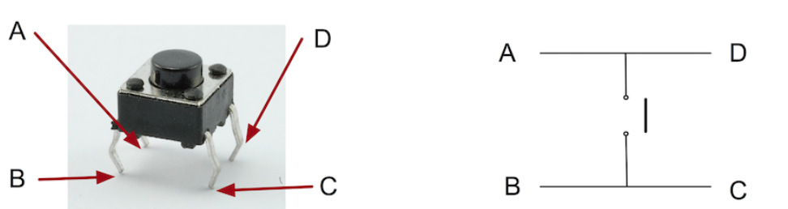
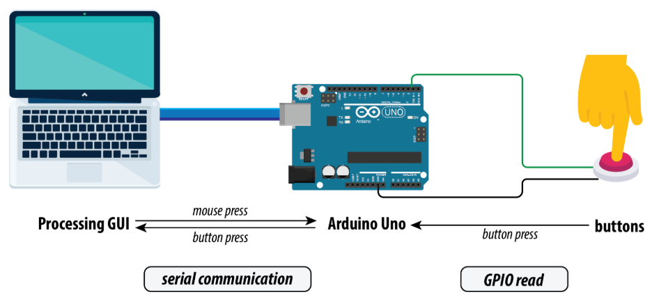
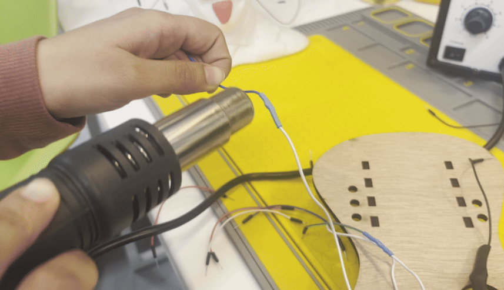

Overview
In the game Guitar Hero, the user interacts with a screen with colored markers. Whenever the colored markers reach the bottom line, the player must press the associated buttons in time with the music. This screen that the user witnesses is known as a GUI, graphical user interface.
In this lab, you'll create a Guitar Hero game GUI and custom-built guitar while learning how to:
- ✅ Code up a GUI using Processing
- ✅ Learn how to solder electronics
- ✅ Package electrical components together in a clean way
🦺 Safety & Important Tips
- Soldering Iron Temperature: Ensure that the soldering iron is never left unattended. It reaches temperatures of ~500 degrees Celsius so never make it touch anything it is not supposed to.
- Lead Poisoning: Most solder contains lead. This is very toxic if ingested. Always wash your hands immediately after soldering and never touch your face.

🔨 Fabrication Quest of the Day
Today, you will code a GUI for Guitar Hero:
- (A) A GUI in Processing using Java (x1)
- (B) Lasercut Guitar with clean electronics (x1)
Your instructors will provide you with:
- (B) The Guitar base (x1)
- (C) Electrical components (buttons, wire, etc.) (x1)
🏗️ Software & Hardware
Software: Processing, Arduino IDE (should have downloaded in a previous lab)
PPE: Safety glasses
Hardware: Pre-lasercut guitar, wire, wire cutter, buttons (x3), solder, zipties, electrical tape, Arduino Uno, multimeter, laptop
Machines: Soldering Iron
Part (0): Downloading Processing and its libraries
- Download Processing (5 mins)
- Install ControlP5 Library for the GUI
- Open Processing
- Click Sketch > Import Library… > Manage Libraries > ControlP5 > Install
- Click Sketch > Import Library… > Manage Libraries > Serial

Part (1): Getting a Preliminary GUI (10 mins)
Processing uses a programming language called Java. Just like Arduino, it has two main functions: setup() and draw(). setup() runs once at the beginning. draw() runs over and over, 60 times a second, allowing animations.
import controlP5.*;
ControlP5 cp5;
PFont myFont;
void setup(){
size(300, 400);
myFont = createFont("Arial-Bold-32", 32);
}
void draw(){
background(50, 70, 100);
fill(255);
textFont(myFont);
text("GUITAR HERO", 50, 50);
}
Next, let's add a button:
import controlP5.*;
ControlP5 cp5;
PFont myFont;
void setup(){
size(300, 400);
myFont = createFont("Arial-Bold-32", 32);
cp5 = new ControlP5(this);
cp5.addButton("START")
.setPosition(100, 120)
.setSize(100, 50)
.setFont(myFont)
.setColorCaptionLabel(color(255))
.setColorBackground(color(0, 150, 255))
.setColorActive(color(0, 200, 255));
}
void draw(){
background(50, 70, 100);
fill(255);
textFont(myFont);
text("GUITAR HERO", 50, 50);
}
Now, let's animate a circle:
import controlP5.*;
ControlP5 cp5;
PFont myFont;
float circleY = 0;
void setup(){
size(300, 400);
myFont = createFont("Arial-Bold-32", 32);
cp5 = new ControlP5(this);
cp5.addButton("START")
.setPosition(100, 120)
.setSize(100, 50)
.setFont(myFont)
.setColorCaptionLabel(color(255))
.setColorBackground(color(0, 150, 255))
.setColorActive(color(0, 200, 255));
}
void draw(){
background(50, 70, 100);
fill(255);
textFont(myFont);
text("GUITAR HERO", 50, 50);
fill(255, 160, 180);
ellipse(150, circleY, 50, 50);
circleY += 2;
if(circleY > height){ circleY = 0; }
}Checkoff 1: Ask your instructor for a check-off on completing Part (1) and showing your animation.
Part (2): Adding a Button (15 mins)
We want our guitar to have buttons. Buttons can read as 3.3 V or 0 V.
To understand how the button is wired internally, we need a multimeter. Use the continuity mode we learned about in a previous lab.
When the multimeter beeps, it means the two legs of the button are connected.
Normally, a button has two legs: unconnected when unpressed, connected when pressed.
The buttons we are using have four legs.
To find the correct orientation of the button:
- Place the button on a breadboard and test with a multimeter.
- This is optional but useful if you want to check it safely.
- Or, if you usually solder, you can solder the button directly to wires and connect it to the Arduino.
- The important thing is to know which pins connect when pressed.
Here is an example wiring:
- Button leg 1 → Arduino pin 2
- Button leg 2 → GND
Repeat for the other buttons (pin 3 and pin 4).
int pushButtonA = 4;
int pushButtonB = 3;
int pushButtonC = 2;
void setup() {
Serial.begin(9600);
pinMode(pushButtonA, INPUT_PULLUP);
pinMode(pushButtonB, INPUT_PULLUP);
pinMode(pushButtonC, INPUT_PULLUP);
}
void loop() {
int buttonStateA = digitalRead(pushButtonA);
if (!buttonStateA) { Serial.println("A"); }
int buttonStateB = digitalRead(pushButtonB);
if (!buttonStateB) { Serial.println("B"); }
int buttonStateC = digitalRead(pushButtonC);
if (!buttonStateC) { Serial.println("C"); }
delay(1);
}If you connected the button to Pin 2, then pressing the button prints "A" in the Serial Monitor. Repeat for Pin 3 and Pin 4 for "B" and "C".
Checkoff 2: Show that your Serial Monitor prints A, B, C when you press the buttons.
Part (3): Adding Serial Communication in Processing (20 mins)
Close the Arduino Serial Monitor before running the Processing file, or you will get a "port busy" error.
This code connects Processing to Arduino via Serial:
import processing.serial.*;
Serial myPort;
String val = "";
void setup() {
size(300, 400);
String portName = "COM3";
myPort = new Serial(this, portName, 9600);
println("Connected to " + portName);
}
void draw() {
background(50, 70, 100);
fill(0);
text("GUITAR HERO", 100, 30);
if (myPort.available() > 0) {
String incoming = myPort.readStringUntil('\n');
if (incoming != null) { val = incoming.trim(); }
}
println(val);
}Checkoff 3: Show your instructor that you have working Serial communication with Arduino and Processing.
Part (4): Testing the Game with Keyboard and Breadboard (20 mins)
Download the game folder: Guitar Hero Link
Open the Processing file rhythmgame.pde under Processing/rhythmgame folder.
Install the Sound library via Processing Library Manager (author: The Processing Foundation).
Make sure the Arduino Serial Monitor is closed before running Processing.
Edit line 68 to match your trackdata location:
trackData = new TrackData("/Users/STEAM/mit-gtl-bahrain-2025-guitar-hero/Processing/rhythmgame/data/trackinfo.txt");Test the game using arrow keys first, then test the Serial-connected breadboard buttons.
Checkoff 4: Show your instructor that your breadboard controller works and explain the Serial code.
Part (5): Learning Soldering (15 mins)
Soldering connects two electrical components using melted metal (solder). Heat the solder with the iron to make a strong electrical connection.
Set the iron to 450°C. Ask instructors for help if needed.
YouTube soldering tutorial:
Quick steps:
- Cut and strip wire to expose metal.

- Bring solder, iron, wire, and button leg together. Let the solder melt and solidify.
- Insulate wires using electrical tape or heatshrink. Heat with heatgun. 
Checkoff 5: Your guitar should be soldered and heatshrinked fully now!
Part (6): Test the Guitar Hero Game Finally (10 mins)
Button closest to Arduino → Pin 2, middle → Pin 3, farthest → Pin 4. Big black wire → GND.
Use the same Arduino code that printed A, B, C earlier. Make sure the Processing port is correct.
Test your guitar with the game and see the score increase!
Checkoff 6: Show that your guitar works with the Guitar Hero game.